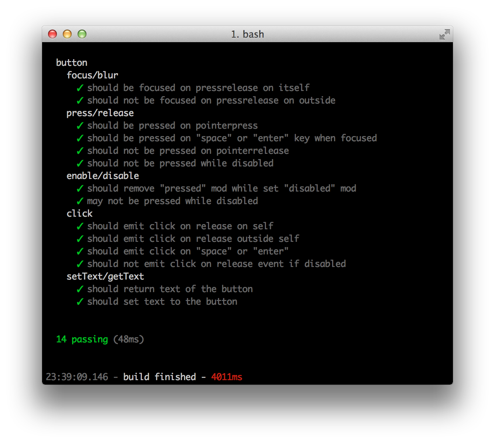
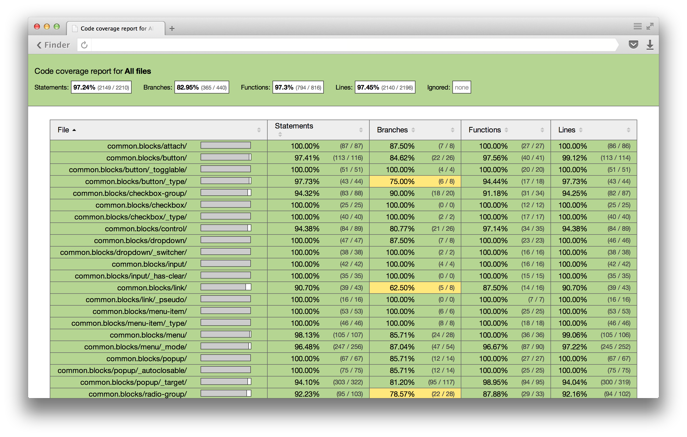

enb-bem-specs

Инструмент для сборки и запуска тестов (спеков) на клиентский JavaScript. В процессе сборки генерируются сеты из тестов БЭМ-блоков с помощью ENB.
Установка
$ npm install --save-dev enb-bem-specs
Для работы модуля требуется зависимость от пакетов enb-magic-factory версии 0.3.x или выше, а так же enb версии 0.13.0 или выше.
Технология spec.js в файловой системе
У каждой БЭМ-сущности может быть свой набор тестов, которые будут выполняться независимо от тестов остальных БЭМ-сущностей.
$ tree -a <level>.blocks/<block-name>/ <block-name>/ └── spec.js
В результате сборки будет построен сет из обычных бандлов (nested-уровень), каждый из которых представляет собой:
$ tree -a <set-name>.specs
<set-name>.specs
└── <block-name>/ # Бандл для БЭМ-сущности.
├── <block-name>.js # Клиентский JavaScript,
# необходимый для выполнения тестов.
├── <block-name>.css # Стили, необходимые для выполнения тестов.
├── <block-name>.spec.js # Код тестов.
└── <block-name>.html # HTML, необходимый для выполнения тестов.
# Включает в себя js, css и spec.js таргеты.
Frameworks
Как написать тест?
Тесты пишутся в BDD-стиле с использованием асинхронной модульной системы YModules.
Чтобы добавить тест для БЭМ-сущности, нужно в её директории на требуемом уровне переопределения создать файл с названием <bem-name>.spec.js.
Пример:
modules.define(
'spec',
['button', 'i-bem__dom', 'jquery', 'BEMHTML'],
function(provide, Button, BEMDOM, $, BEMHTML) {
describe('button', function() {
var button;
beforeEach(function() {
button = BEMDOM.init($(BEMHTML.apply({ block: 'button', text: 'foo' })).appendTo('body'))
.bem('button');
});
afterEach(function() {
BEMDOM.destruct(button.domElem);
});
it('should be focused on pressrelease on itself', function() {
button.hasMod('focused').should.be.false;
button.domElem
.trigger('pointerpress')
.trigger('pointerrelease');
button.hasMod('focused').should.be.true;
});
});
provide();
});
Запуск спеков
После сборки сетов произойдёт запуск тестов для указанных БЭМ-сущностей.
Собранные HTML-файлы для каждой БЭМ-сущности содержат в себе необходимый код стилей и JavaScript, а так же код тестов. Эти HTML-файлы передаются в PhantomJS.

Покрытие кода
Если при запуске переменная окружения ISTANBUL_COVERAGE будет равна значению yes,
то после выполнения тестов в корне появится файл coverage.json с информацией о покрытии исходного JavaScript-кода тестами.
С помощью команды report инструмента istanbul
можно составить HTML-отчёт на основе файла coverage.json:
$ istanbul report coverage.json

Как использовать?
В make-файле (.enb/make.js) нужно подключить модуль enb-bem-specs.
С помощью этого модуля следует создать конфигуратор, указав название таска, в рамках которого будет происходить сборка уровней сетов из тестов.
Конфигуратор имеет единственный метод configure. Его можно вызывать несколько раз, чтобы задекларировать сборку нескольких сетов.
module.exports = function (config) {
config.includeConfig('enb-bem-specs'); // Подключаем модуль `enb-bem-specs`.
var examples = config.module('enb-bem-specs') // Создаём конфигуратор сетов
.createConfigurator('specs'); // в рамках `specs`-таска.
examples.configure({
destPath: 'desktop.specs',
levels: ['blocks'],
sourceLevels: [
{ path: '../libs/bem-core/common.blocks', check: false },
{ path: '../libs/bem-pr/spec.blocks', check: false },
'blocks'
]
});
};
Опции
String
destPath— путь относительно корня до нового сета с тестами, которые нужно собрать. Обязательная опция.String[] | Object[]
levels— уровни, в которых следует искать тесты. Обязательная опция.String[] | Object[]
sourceLevels— уровни, в которых следует искать JavaScript-код, необходимый для запуска тестов.String[]
jsSuffixes— суффиксыjs-файлов БЭМ-сущностей. По умолчанию —['js'].String[]
specSuffixes— суффиксыspec.js-файлов БЭМ-сущностей. По умолчанию —['spec.js'].String|Function
depsTech— технология для раскрытия зависимостей. По умолчанию —deps-old.Boolean
langs— включает в сборкуi18n.String[]
scripts— дополнительные js-скрипты, которые необходимо подключить на тестируемую страницу. Например:
scripts: ['https://yastatic.net/jquery/1.8.3/jquery.min.js',
'https://yastatic.net/lodash/2.4.1/lodash.min.js'],
Boolean
includeYM— добавляет в собираемый файл код модульной системыym. По умолчанию —true.Function
schemeBuilder— схема именования. Требуется только для не-БЭМ схем именований.
Запуск из консоли
В make-файле декларируется таск, в котором будет выполняться сборка сетов из тестов.
В ENB запуск таска осуществляется с помощью команды make, которой передаётся имя таска:
$ ./node_modules/.bin/enb make <task-name>
Сборка и запуск всех тестов
Если сборка сетов из тестов была задекларирована в specs-таске:
$ ./node_modules/.bin/enb make specs
Сборка всех тестов для указанной БЭМ-сущности
Чтобы собрать тесты БЭМ-сущности block__elem для сета desktop.specs:
$ ./node_modules/.bin/enb make specs desktop.specs/block__elem
Лицензия
© 2014 YANDEX LLC. Код лицензирован Mozilla Public License 2.0.